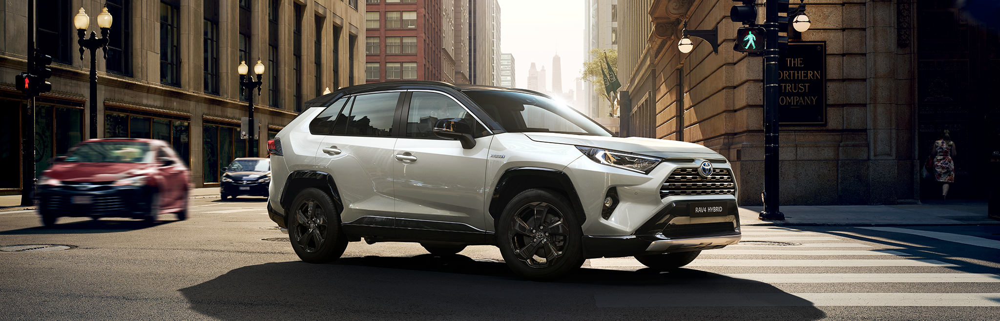
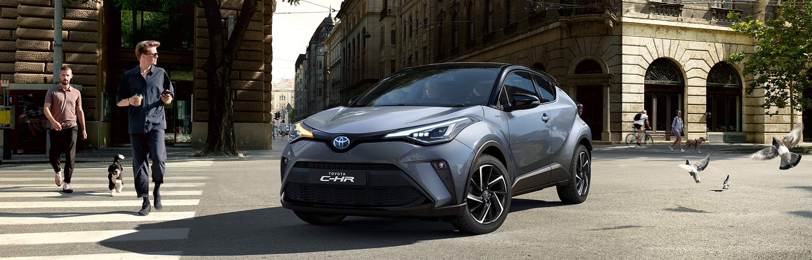
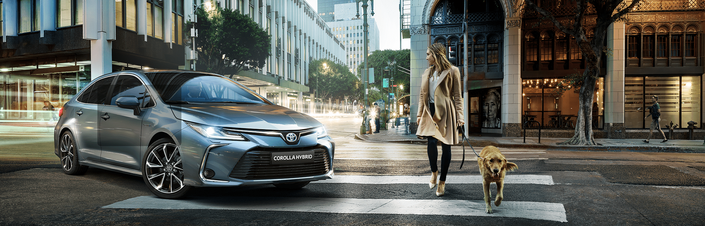

New Toyota RAV4
For the first time, the RAV4 will join a formidable team
of Toyota TRD Off-Road SUVs and pickups inspired by the brand’s
legendary off-road and desert racers. Beneath the new-generation RAV4’s
bolder design, the Toyota New Global Architecture (TNGA-K) platform provides
an ideal base for TRD’s renowned go-anywhere capability and style. Building on
the 8.6-inch ground clearance and design features of the RAV4 Trail
grade, the 2020 RAV4 TRD Off-Road goes above and
beyond with suspension, wheels and tires engineered specifically for trail driving.
Learn More

2020 Toyota C-HR
The new 2020 Toyota C-HR remains true to the visual identity which has made it such a success,
its coupe-like lines creating a bold style that continues to stand out. Both the front and rear
have received detailed attention, bringing added refinement to the shape, while a colour-coordinated
lower lip reinforces a strong, wide and elevated stance.
Front lights are upgraded to premium LED technology, with the daytime running lights and indicators combined
into one frontal projector that emits a single smooth line above the main beam. At the rear, the new combination
lights are connected by a gloss black spoiler creating a single clean shape.
Learn More

New Toyota Corolla
Elegant, economical and comfortable, the new Corolla gives you the pleasure of driving, whatever youur lifestyle.
Wherever you travel, whether in the city or on the highway, you can enjoy the self-driving hybrid system and reliability
that Toyota is known for The new Corolla is more than just a great driving car: a comfortable saloon designed to suit your neeeds.
With the updated Toyota Safety Sense kit, every road user is as safe as possible
Learn More